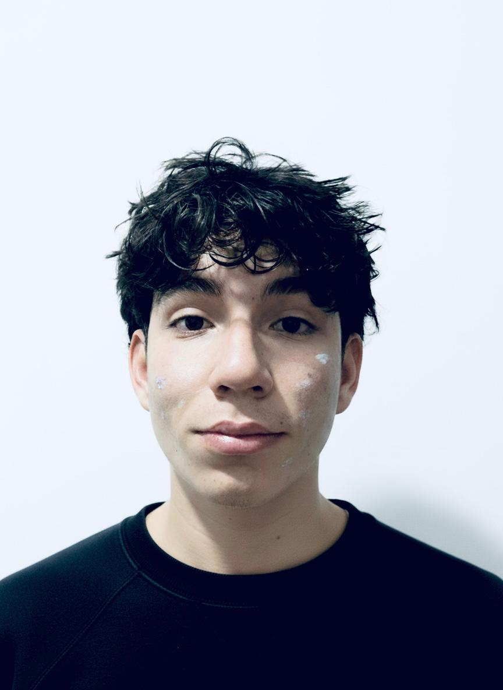
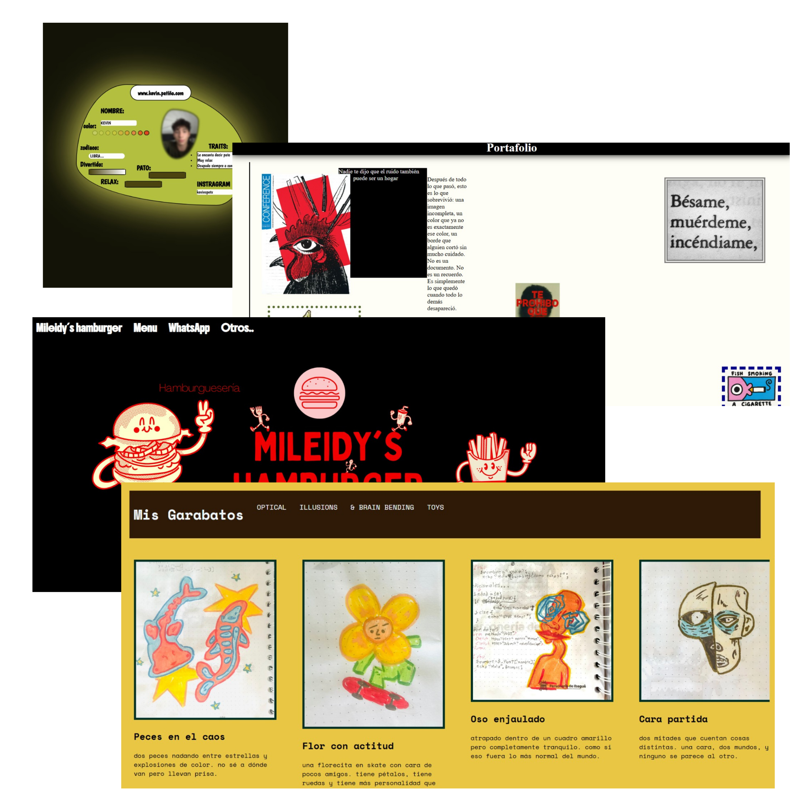

Datos personales
- ✉️kevinsptx123@gmail.com
- 📞+57 3153642160
- 💻GithHub
- 📍 Ibague-Colombia


Ya me gradue del colegio y ahora estoy enfocado en lo que sigue. En estos momentoos estoy en el SENA haciendo un tecnologo, aprendiendo cosas nuevas poco a poco. No todo es facil pero ahi voy, mejorando y tratando de sacar esto adelante.
Me gusta mucho pasar el tiempo en el computador, probando cosas nuevas y aprendiendo poquito a poquito. A veces juego, otras veces intento crear cosas, como paginas o ideas que se me vienen a la mente. Tambien me gusta escuchar musica y relajarme, salir un rato a despejar la mente y compartir con mis amigos, aunque no siempre salga mucho. No soy perfecto en nada pero me gusta intentar y mejorar cada dia asi sea un poco.
